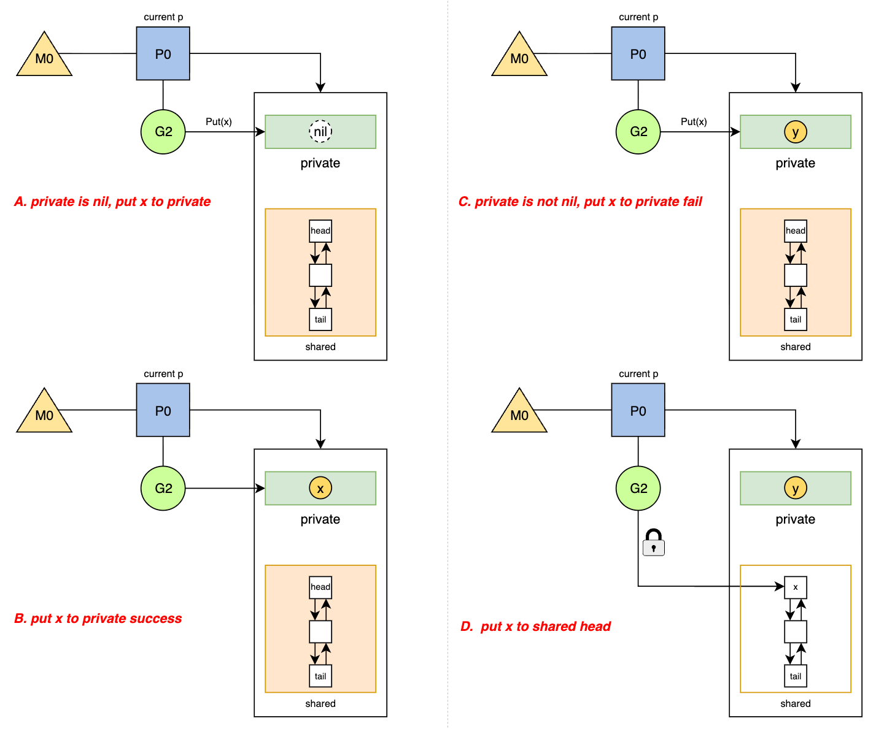

📄 本文共 1929 字，预计阅读 5 分钟
14. sync.Pool
Abstract
Keywords: Object Pool, GMP模型, P-Local, Victim Cache, Work Stealing, 无锁队列
1. 概述
Go 语言的 sync.Pool 提供了一种机制，允许保存一组临时对象以便单独保存和复用。其核心设计目标是减轻垃圾回收（GC）的压力，通过复用内存来减少高频分配带来的 CPU 开销和内存碎片。
与 mutex 试图解决并发竞争不同，sync.Pool 利用 Go 调度器（GMP 模型）的特性，采用 P-Local 的存储策略，尽可能在无锁状态下完成对象的存取，仅在跨 P 窃取时才引入轻量级的同步机制。
2. 核心数据结构与内存布局
sync.Pool 的源码实现（位于 src/sync/pool.go）展示了其如何利用 CPU 缓存局部性来优化性能。
2.1 结构体定义
sync.Pool 结构体对外暴露的 API 非常简单，但其底层通过 poolLocal 数组实现了与 P 的绑定。
type Pool struct {
noCopy noCopy
local unsafe.Pointer // 指向 [P]poolLocal 数组的指针
localSize uintptr // 数组大小，通常等于 P 的数量 (GOMAXPROCS)
// 用户自定义的对象创建函数，当池为空时调用
New func() any
}
// 对应每个 P 的本地存储结构
type poolLocal struct {
poolLocalInternal
// 防止伪共享
pad [128 - unsafe.Sizeof(poolLocalInternal{})%128]byte
}
// 内部核心存储
type poolLocalInternal struct {
private any // 私有对象，只能由当前的 P 存取，无锁操作
shared poolChain
}
2.2 内存布局解析
sync.Pool 的核心在于 local 字段，它是一个指向 poolLocal 数组的指针。数组的索引直接对应当前 goroutine 所在的 P 的 ID。
- Private 区 (无锁): 每个
poolLocal包含一个private字段。当 G 在 P 上运行时，优先存取该字段。因为同一时刻一个 P 只能运行一个 G，所以此处操作完全无锁，速度极快（Fast Path）。 - Shared 区 (有锁/CAS): 当
private为空或已满时，操作会转移到shared字段。这是一个双端队列，支持当前 P 从队头 Push/Pop，以及其他 P 从队尾 Steal（Pop）。 - False Sharing 优化: 结构体中的
pad字段强制将poolLocal对齐到 CPU 缓存行，避免不同 P 在修改各自的poolLocal时导致缓存行失效。
图1描述了sync.Pool的内部结构及同P的关联示意图。
 图1: sync.Pool结构示意图
图1: sync.Pool结构示意图
3. Get 与 Put 流程深度剖析
sync.Pool 的操作同样采用了 Fast Path 和 Slow Path 分离的设计策略，以适应不同的竞争场景。
3.1 Put 流程 (归还对象)
put的流程如图2所示，我们以用户调用 Put(x) 为例进行描述。
{kind=link}
当进行put操作时，runtime 首先会禁止当前 G 的抢占（Pin P），然后按以下优先级存储：
- Fast Path: 如果当前 P 的
private为nil，直接将对象填入private。操作结束，耗时极短。 - Slow Path: 如果
private已经有值，则将对象 put 到shared队列的头部（head）。 - 解锁: 解除 P 的 Pin 状态。
这里需要特别注意的是，在进行put操作之前，会执行pin()操作来避免 goroutine 在访问 P-local 的过程中被调度到另一个 P，导致错误的 local 访问与竞态。
3.2 Get 流程 (获取对象)
Get() 的逻辑相对复杂，涉及本地缓存读取和跨 P 窃取（Work Stealing）。图3展示了详细的决策逻辑及流程示意。
 图3: get流程示意
图3: get流程示意
get的流程是经过多个决策的，主要步骤如下：
- 从当前g绑定的p的
private字段获取，假如不为空，直接返回； - 从当前g绑定的p的
shared列表获取，假如head不为空，直接返回； -
假设当前p的
private和shared都为空，那么其会尝试从其他p的shared列表窃取，窃取成功则直接返回；- 窃取者总是从
shared队列的尾部取数据； - 当前 p 总是从
shared队列的头部取数据； - 这种 Head/Tail 分离的机制使得在大部分情况下，本地 p 和窃取者互不干扰，仅当队列中只剩下一个元素时才需要通过 CAS 进行竞争。
- 窃取者总是从
-
上述的操作都没有成功，那么就会调用new方法来申请一块新的内存空间；
4. GC 清理与 Victim Cache
sync.Pool 的一个关键特性是它对垃圾回收的敏感性。对象并不是永久存储的，而是通过 Victim Cache（受害者缓存） 机制延长生命周期。
4.1 存活周期
- GC 开始: Runtime 调用
poolCleanup函数。 -
数据迁移:
- 当前所有的
oldPools(上一轮 GC 幸存者) 被彻底清除（置为 nil）。 - 当前所有的
allPools(活跃对象) 被移动到oldPools中，成为 Victim Cache。 allPools被重置为空。
- 当前所有的
-
GC 结束: 程序继续运行。
4.2 性能影响
这种机制意味着：
- 放入 Pool 的对象最多存活两次 GC 间隔。
- 在 GC 刚结束后，
Get操作的命中率会短暂下降，因为主要缓存被移到了 Victim 区。 - 随着程序运行，热点对象会从 Victim 区（通过
Get）被捞回并重新Put到活跃区，或者通过New重新创建。
5. gin中的应用
由于我们目前的服务中使用gin作为http模块的处理的框架，所以有必要针对sync.Pool在gin中的应用做下梳理。gin 被称为高性能 Web 框架，其核心优化手段之一就是利用 sync.Pool 来复用 *gin.Context 对象。在 Web 服务中，Context 对象承载了请求详情、响应写入器、中间件链等信息，是一个体积较大且生命周期短暂（仅存活于一次 HTTP 请求期间）的对象。
如果没有对象池，对于 QPS 为 10万的服务，意味着每秒钟需要在堆上频繁申请和销毁 10万个 Context 对象。这会造成两个严重后果：
- GC 压力剧增：大量临时对象导致 GC 频繁触发，STW 时间变长，增加长尾延迟。
- CPU 浪费：频繁的
malloc和free系统调用消耗大量 CPU 资源。
5.1 gin的实现方案
gin 在 Engine 结构体中初始化了一个 sync.Pool：
// gin.go
type Engine struct {
RouterGroup
// ...
pool sync.Pool // 对象池
}
func New() *Engine {
engine := &Engine{
// ... 其他初始化
}
// 初始化 pool，指定 New 函数
engine.pool.New = func() any {
return engine.allocateContext()
}
return engine
}
在处理每一个 HTTP 请求时，Gin 严格遵循了 Get -> Reset -> Use -> Put 的生命周期：
// gin.go 中的 ServeHTTP 方法
func (engine *Engine) ServeHTTP(w http.ResponseWriter, req *http.Request) {
// 1. Get: 从池中获取一个 Context 对象
// 此时获取到的对象可能包含上一次请求的残留数据
c := engine.pool.Get().(*Context)
// 2. Reset: 重置
// 将 ResponseWriter 和 Request 替换为当前请求的
// 同时重置内部的 Keys、Errors、Handlers 链等
c.writermem.reset(w)
c.Request = req
c.reset()
// 3. Use: 处理业务逻辑
engine.handleHTTPRequest(c)
// 4. Put: 归还对象
// 请求处理完毕，将对象放回池中，等待下一次复用
engine.pool.Put(c)
5. 总结
5.1 使用上需要注意的问题
- 不可存储连接: 不要用它来存储数据库连接或 Socket，因为对象会被 GC 悄悄回收。
- 必须 Reset: 取出的对象可能包含脏数据，务必在
Get后或Put前重置对象状态。
// 最佳实践示例
var bufPool = sync.Pool{
New: func() any {
return new(bytes.Buffer)
},
}
func Log(w io.Writer, key, val string) {
b := bufPool.Get().(*bytes.Buffer)
b.Reset() // 必须重置！
// ... 业务逻辑
bufPool.Put(b)
}
5.2 总结
Go 的 sync.Pool 展示了在多核环境下对内存管理的极致优化：
- P-Local 架构: 通过将数据分片到每个 P，消除了大部分锁竞争，实现了极高的吞吐量。
- Victim Cache: 巧妙地利用两级缓存机制，既避免了无限制的内存增长，又防止了 GC 导致的缓存雪崩。